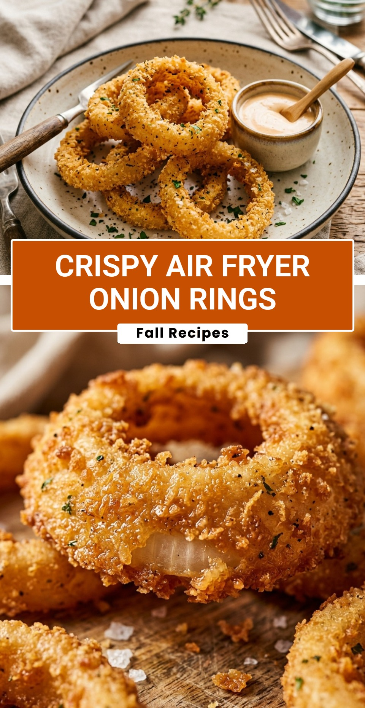

Crispy Air Fryer Onion Rings
October 18, 2026

There is nothing quite like biting into a perfectly golden, crunchy onion ring. While the deep-fried version is a classic favorite, it often leaves your kitchen messy and your food feeling heavy. That is where the air fryer comes in to save the day, giving you all the crunch you crave with much less oil.
Recipe Information
Prep Time: 15 minutes
Cook Time: 12 minutes
Total Time: 27 minutes
Servings: 4
Difficulty Level: Easy
Nutrition Information
Calories per serving: 210 kcal
Protein: 6g
Carbohydrates: 34g
Fat: 5g
Fiber: 3g
Sugar: 5g
Sodium: 450mg